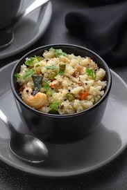

Home
Upma

Ingredients
- 1 cup rava
- 2 tbsp oil or ghee
- 1 tsp mustard seeds
- 1–2 green chilies, finely chopped
- 1-inch ginger, finely chopped
- 8–10 curry leaves
- 1 medium onion, finely chopped
- 2.5 cups water
- Salt to taste
- Fresh coriander leaves for garnish
Steps
- Roast the Rava
- In a dry pan, roast 1 cup rava on medium flame for 4–5 minutes until slightly aromatic.
- Stir constantly to avoid burning.
- Remove and set aside
- Prepare the Tempering
- Heat 2 tbsp oil/ghee in a pan.
- Add mustard seeds, let them splutter.
- Add urad dal, chana dal, and cashews if using. Fry till golden.
- Add green chilies, ginger, and curry leaves. Sauté for 30 seconds.
- Add chopped onions, cook till soft and translucent.
- Add Water and Boil
- Add 2.5 cups water to the pan.
- Add salt.
- Bring in to a rolling boil.
- Add Rawa Slowly
- Lower the heat.
- Slowly pour in the roasted rawa, stirring continuously to prevent lumps.
- Keep stirring untill all water is absorbed and upma thickens (2-3 minutes).
- Steam & Rest
- Cover with a lid adn let it rest on low heat for 2 more minutes.
- Turn off heat and let it sit for 5 minutes for flavours to settle.